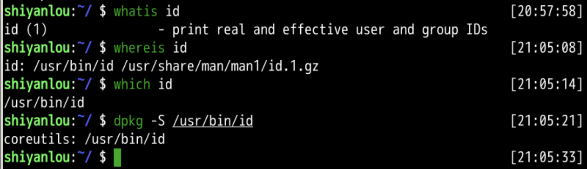
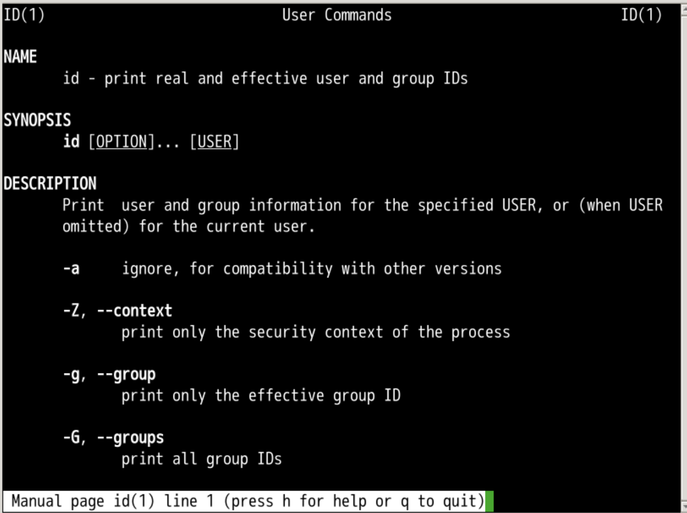
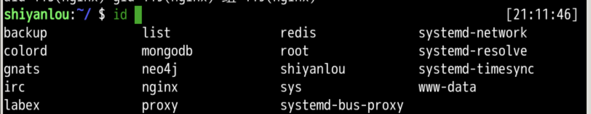
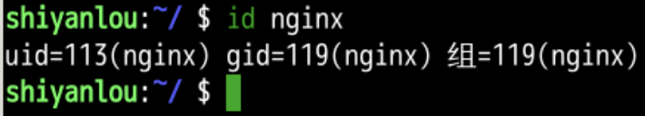
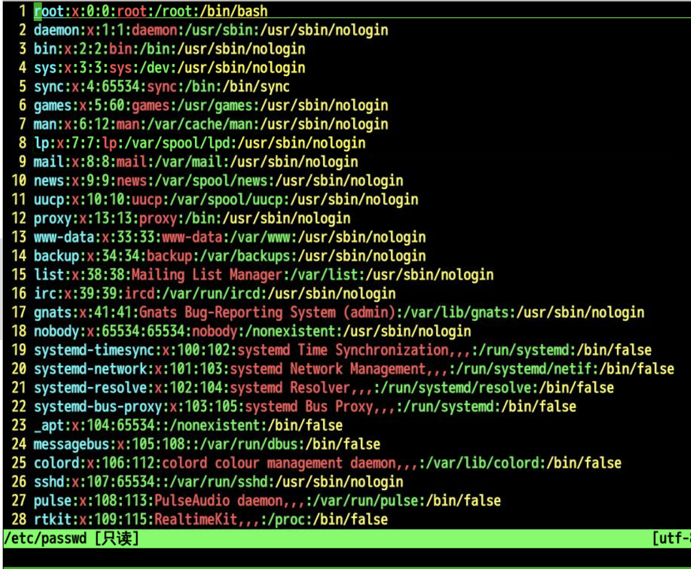
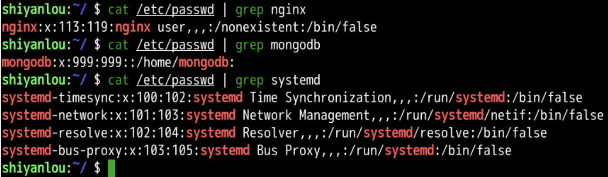

阴历(lunar)
回忆
- 上次了解了三个命令
- whoami
- who
- w
- 最短的最好用
- 可以查看都有谁目前登录到系统中
- whoami就是查看我是谁
- 对应哪个userid
- 可以把所有的用户id列出来么？
id

- id 命令
- 可以 查看试验楼用户的账号信息
- shiyanlou
- uid - 用户id
- gid - 用户组id
- 5000(shiyanlou) - 这个userid
- 属于三个组(group)
- 5000(shiyanlou)
- 27(sudo)
- 5002(public)
- 如何理解id呢？
灵魂三问

- id是输出用户和组的id的命令
- 我们来查看一下id的帮助手册
细节

| 参数 | 信息 |
|---|---|
| -g或--group | 显示用户所属群组的ID |
| -G或--groups | 显示用户所属附加群组的ID |
| -n或--name | 显示用户，所属群组或附加群组的名称 |
| -r或--real | 显示实际ID |
| -u或--user | 显示用户ID |
| -help | 显示帮助 |
| -version | 显示版本信息 |
- 如何查看到更多用户呢？
id
- id 之后 按下 Tab

- 可以看到更多的用户id
- 可以查看某个id的详细信息

- 在哪里可以查询用户更详细的信息呢？
/etc/passwd
cat /etc/passwd
vi /etc/passwd
- 可以看到更多的userid

- 应该如何理解这些用:分割的字段呢？
区分
cat /etc/passwd | grep shiyanlou

- 这就是更详细的用户信息

- 各种用户很多
- 但是这七列的结构是一致的
总结
- 这次我们研究了一个新的命令id
- 可以显示出用户id的一些信息
- 我们目前的用户id就是shiyanlou
- /etc/passwd中有更详细的用户信息
- 这些信息被:分割为7列
- 我可以自己创造一个用户id吗?🤔
- 下次再说👋